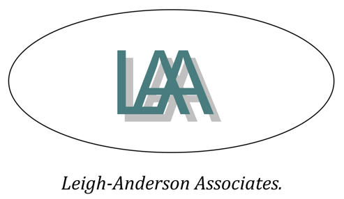

Much Ado About Nothing
Much Ado About Nothing rehearsed and performed in only 60 hours to raise money for the British Heart Foundation. Shakespeare and his ensemble might have had only one rehearsal before the first performance of every play. Brevity is the soul of wit. Fight for every heartbeat with Much Ado About Nothing and the British Heart Foundation.
It’s 1983, the year of protests, peace camps and punk rock. Don Pedro, Benedick, Claudio and Don John, activists in the Campaign for Nuclear Disarmament (CND), arrive at Greenham Common Women’s Peace Camp. They have been fighting against the Government, taking militant action against the missiles as they are moved around the country, and each other, when Claudio revealed Don Pedro’s brother, Don John, as a police informant. After a human protest chain gathers nation-wide media coverage, Innogen (Leonato) welcomes the CND into the camp to dance on the missile silo of Greenham Common's airbase. One peaceful protester, Beatrice, is not happy to see an activist again, but Claudio falls for a young woman in the camp called Hero and Don John wants revenge.

60 Hour Shakespeare®'s 2018 performance of Much Ado About Nothing was sponsored by Leigh-Anderson Associates Ltd (public liability insurance) and JVL Consultants Ltd (production budget).
Thank you to the following, who have also supported the production by displaying posters or flyers in Caversham: Martin & Co Letting Sales and Investment; Waitrose; Natwest Bank; Barclays Bank; The Flower Shop; Caversham Baptist Church: Carpet & Vinyl; The Barber Shop; Rolands Hair Salon; Caversham Solicitors; Caversham HomeCrafts Ltd; The Caversham Picture Framer; The Indulgent Baker; Suprema Dry Cleaners; Caversham Library; Griffin Chef and Brewer; Parfitt Creswell Solicitors; Indigo Rye; Tesco Esso Express.
Bank Holiday Monday 7:30pm 28th May 2018
Caversham Court Gardens, Reading RG4 7AD
BYOP - Bring your own picnic!